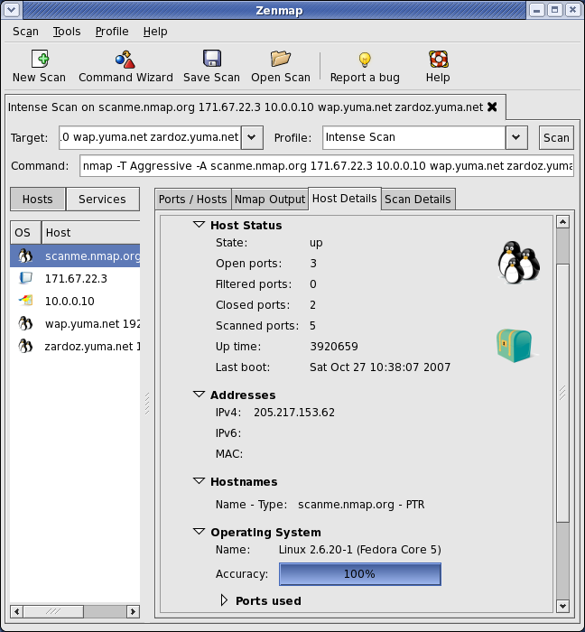
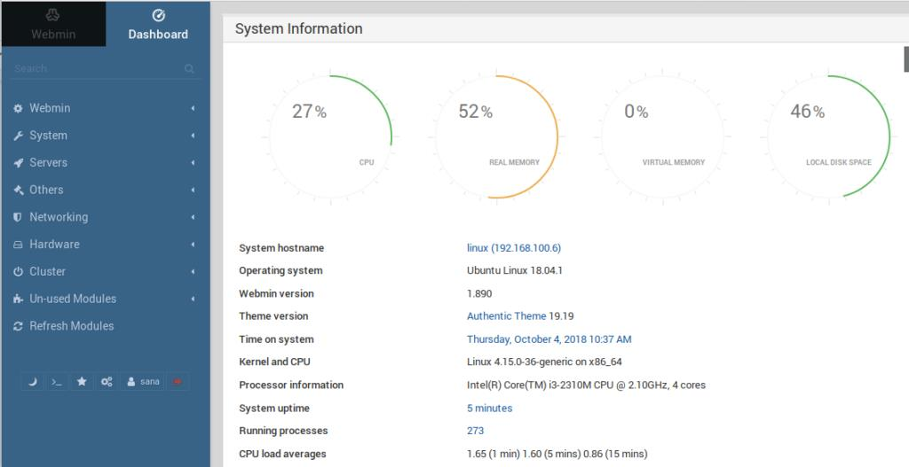
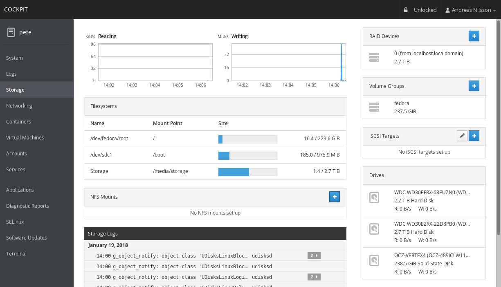
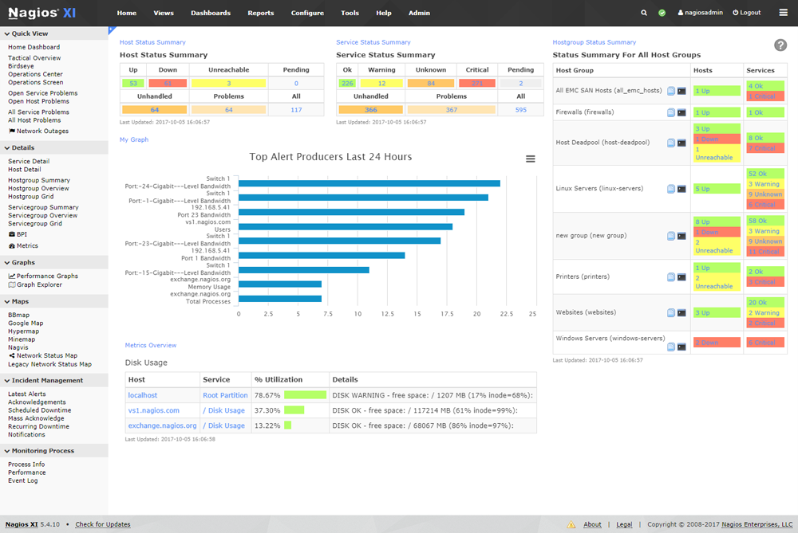
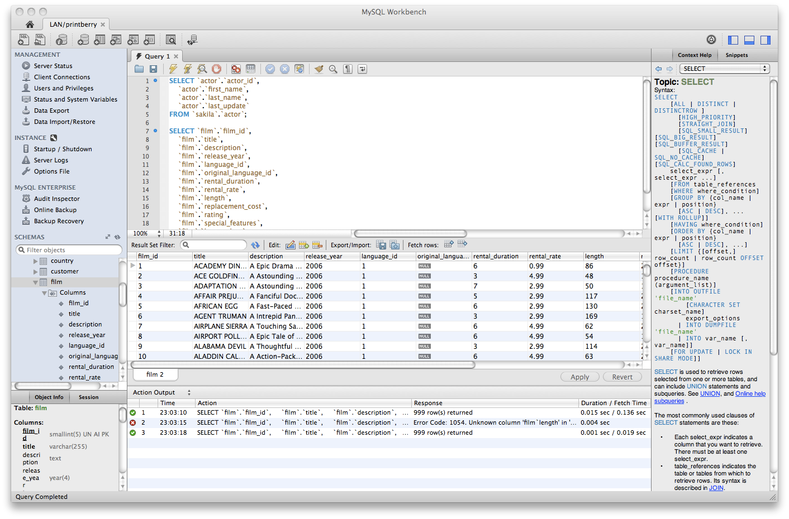
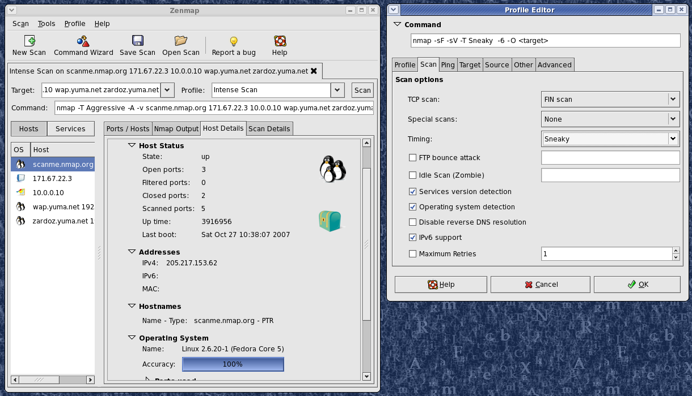

Sooner or later, all system administrators face the challenge of administering servers.
Tools come to rescue the sysadmin’s life. As a sysadmin, you just don’t work on core OS (Linux or Windows) but also deals with what is hosted on them. It could be a database, application server, web server, messaging applications, caching, etc. The following tools should help you in many ways.
Zenmap
When you need to discover network-related issues, Zenmap will come to the rescue. It is not a tool you’ll use daily to administer your system, but it will prove to be invaluable when the need to scan the network to troubleshoot issues arises. It is a front end for the Nmap network scanner that not only runs on Linux but also in Windows, BSD, other versions of Unix, and macOS. Besides network scanning, Zenmap can be used for penetration testing and port scanning, either by experienced or beginner sysadmins.
Zenmap can store profiles, which certainly is one of its strengths. These profiles can be reused for later scans.
Webmin
This one-stop-shop tool offers a web-based interface for administering every aspect of a Linux server. From file sharing to DNS, to Apache web server and various databases. If you need something that is not included in the default package, you can pick one from a huge catalog of third-party modules that bring added functionality.
You just have to download the latest version and copy it to the server’s home folder. After that, you simply run the command: dpkg -i webmin_(version).deb. And that’s all.
Cockpit
Cockpit is another server administration tool. It stands out for being “beginner-friendly”: it is easy to use, lightweight and simple, yet very powerful. It offers a web-based GUI that facilitates storage admin tasks, service starting/stopping, journal inspection, and multi-server setup management. The tool was created for Red Hat, but it runs on many Linux server distributions, besides Red Hat Enterprise Linux (RHEL): Fedora, Arch Linux, Ubuntu, CentOS, among others.
The installation procedure varies for each distribution. In some distributions, like Fedora, CentOS and RHEL, Cockpit can be found in the official repositories. In others, like Debian, Ubuntu, and Linux Mint, you can install Cockpit from its official PPA.
GPing
A fantastic graph-based PING utility. The great thing is, gping lets you visualize multiple endpoints ping in a real-time graph.

This can be a great choice when you have to compare the ping latency for two or more URLs. You can ping IPv4 or IPv6 address and the installer are available for Ubuntu, CentOS, macOS, and Windows.
ShoreWall
This tool adds an abstraction layer for achieving a higher-level configuration of Netfilter. Shorewall reads configuration files and configures Netfilter in the Linux kernel, with the support of the ip, tc, iptables, and iptables-restore utilities. The advantage of using Shorewall is that it divides the interfaces into zones, assigning different levels of access to each one.

It allows the user to operate on groups of computers connected to the interface, instead of working on groups of addresses. Users can easily deploy different policies for each zone.
Nagios
This open-source network monitoring tool was launched in 2002 under the name NetSaint. Since then, Nagios has gone a long way, awarding itself a strong reputation for doing a great job monitoring servers and network devices. It works well out of the box when it is given the task to monitor an environment with many basic protocols. Nagios also provides a base for other monitoring utilities, such as Naemon, Icinga, and OP5.
Nagios got great documentation for you to get it started.
phpMyAdmin
For those who also have to deal with database maintenance, phpMyAdmin is a classic and very popular tool. The main reason for its popularity is perhaps its portability. phpMyAdmin runs in a web browser, which means you can use it from any device, even from a smartphone. Another reason is that it covers all the necessary functions required to manage the database, and you practically don’t have to know how to write queries in SQL to do that.

Puppet
To manage the growing number of servers that run on a corporate network, as a Linux admin, you will need the best-of-breed tools to do orchestration and configuration management. One of these tools is Puppet, a complete one when you take into account user interfaces, modules and available actions.
Puppet not only shows you the whole picture of the Linux server ecosystem but also includes almost any other operating system that may be operating in the network, giving you a deep insight into each one. Installation is easy.
Mysql WorkBench
For those of you who need to manage MySQL databases but don’t like web-based GUIs, feeling more comfortable with traditional windowed apps, then MySQL Workbench is your tool. The bright side of this app is that it installs very simple and has an easy to use graphical interface, grouping every MySQL task you may need to perform.
It offers some interesting goodies, such as unlimited undo/redo, multiple MySQL connections and visual modeling of data and schema. It can also be automated through scripting and extended via plugins. The only drawback of MySQL Workbench is that, unlike phpMyAdmin, to master it you need deep knowledge of SQL.
Nmap
Network administrators have many options when they need to choose a monitoring tool capable of doing network mapping and port scanning. Among them, the de facto standard is Nmap, due to its combination of usability and versatility. Network admins use it for network discovery and vulnerability detection. It can scan all available hosts in the network, making a list of all the services they provide. In this way, the administrator can find open ports and take appropriate measures to reduce security risks.
